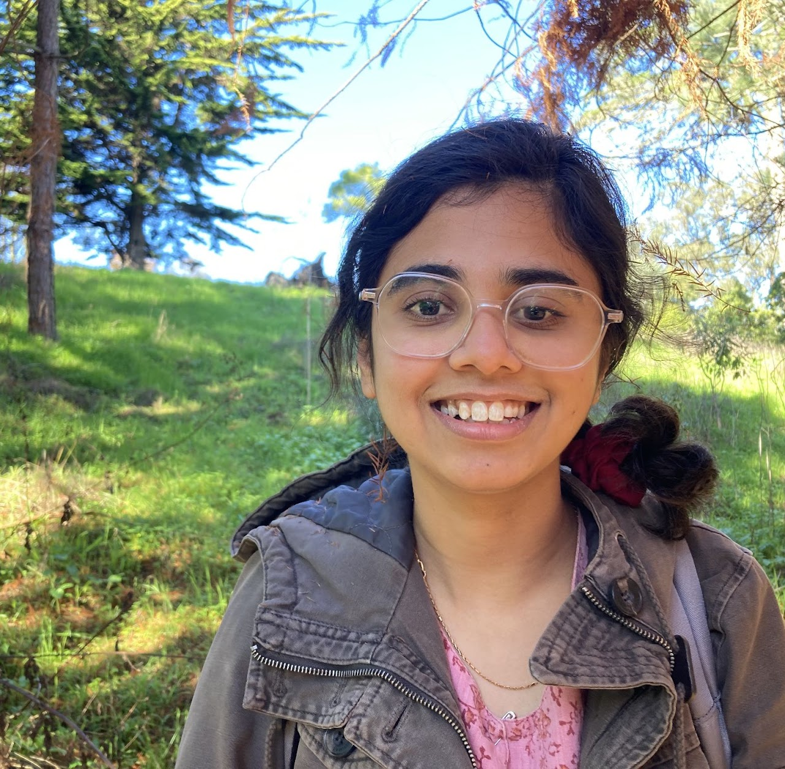

Ph.D. Student in Mathematics
University of California, San Diego
I am a sixth year graduate student in mathematics at UC San Diego. My advisor is Kiran Kedlaya. I completed my BS-MS at IISER Pune.

My research interest is in p-adic differential equations and Berkovich geometry.
We construct uniform analytic models of quasi-unipotent differential modules over Robba rings. For modules of rank at most r and highest ramification break at most b, the inner radius of the model annulus depends only on r,b and the residue characteristic p. At each radius, the model admits a basis, possibly depending on the radius, in which the connection matrix is bounded by a constant depending only on r,b,p. Both bounds are independent of the coefficient field, and these analytic models require no coefficient extension. A prescribed absolute Frobenius structure extends to such a bounded model with the same radius and connection bound. After a finite coefficient extension, we also realize quasi-constant modules, which carry the finite local monodromy, as differential direct summands of sums of pushforwards of rank-one modules, with uniformly bounded cover degrees and highest breaks of the inducing modules.